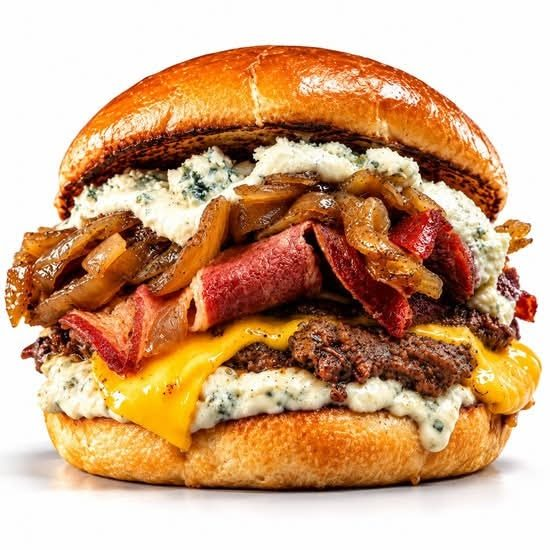

Le smash,
version
CRAZY.
Un snack de quartier à Bourg-en-Bresse, avec une obsession : la gourmandise. Smash burgers préparés à la commande, tacos généreux, recettes ultra gourmandes, et une carte 100 % halal pensée pour toutes les faims.

Pourquoi
« smash » ?
Une boule de viande, une plaque très chaude, un geste : on écrase. La viande saisit instantanément et développe une croûte caramélisée pleine de goût, tout en restant juteuse à cœur. Le cheddar fond dessus dans la foulée, le pain brioché est toasté, et le burger part directement vers vous.

Halal
Toute la carte, sans exception. Bacon de bœuf, kefta, poulet mariné.
À la commande
Chaque smash est écrasé et saisi au moment où vous commandez. Rien n’attend sous une lampe.
Exclus à Bourg
Le smash croissant et le smash poulet : deux recettes qu’on ne trouve que chez CRAZY.

Généreux,
sans détour.
Poulet mariné, kefta épicée, rösti croustillant, œuf, raclette en hiver… et toujours notre sauce gruyère maison. La galette est grillée pour garder le croustillant jusqu’à la dernière bouchée.
Le goût
CRAZY.
Ce sont elles qui font la différence. Préparées chez nous, elles donnent son caractère à chaque recette.
- Sauce Smash
- Gruyère
- Bleue
- Fumée
- Poivre
- Sauce verte
- Algérienne
- Barbecue
La viande est-elle halal ?
Oui, toute la carte est 100 % halal, y compris le bacon (bacon de bœuf) et les lardons.
Peut-on manger sur place ?
Oui. Vous pouvez manger sur place, emporter votre commande ou vous faire livrer via Uber Eats.
C’est quoi, les frites « épices signature » ?
Nos frites sont assaisonnées avec un mélange d’épices maison. Elles accompagnent tous les menus.
Combien de temps faut-il attendre ?
Tout est préparé à la commande ; comptez environ 10 minutes selon l’affluence.